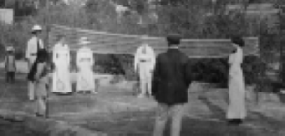
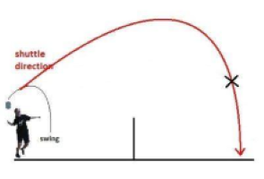
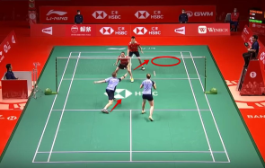
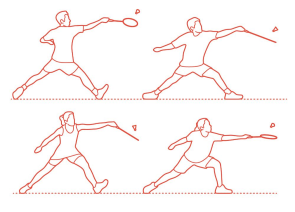
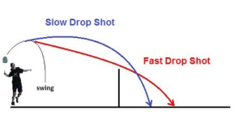
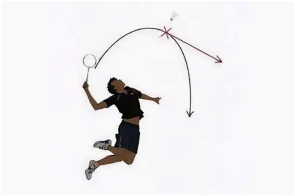
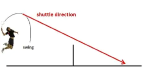
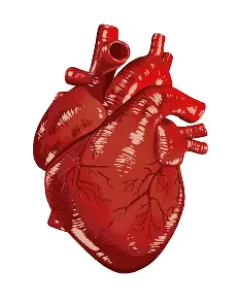

Over 2000 Years ago, Many cultures had already follow their own design of badiminton.
China = Jianzi
In China, It was called Jianzi, using your feet and body to keep the shuttle afloat.
The game has also gained a following around the globe. In English, both the sport and
the object with which it is played are referred to as a "shuttlecock" or "featherball".
Japan = Hanetsuki
In Japan, they called it Hanetsuki. With the use of a wooden paddle and a feather shuttle to do the same.
It was believed that the longer the shuttle remains in the air, the greater the protection from mosquitoes.
Though no longer popular, the paddle, called a hagoita, are still commonly sold throughout japan.
India = Poona
In India, mid-19th century, created by British army officers stationed in Pune.Using a battledore, a shuttle
and a net to create Poona.
Poona introduced formal rules, scoring, and a net, making it more competitive. British officers later brought
the game to England, where it was renamed badminton after the Duke of Beaufort's estate, Badminton House.

Modern Badminton
It was then brought back to England, and finally
developed as Badminton which we all love today. Spreading from a club in England to the whole world!
MCQ Quiz (Test your Knowledge!)
Methods
========== Defensive Techniques ==========
Defensive Techniques
LOBBING
A simple technique called "Lobbing" sends a shuttle high and far into the court. A defensive technqiue to trick
opponent into tiring themselves out or play it with low hits to get an advantage.

PUSHING
Pushing, as its name implies, a defensive technique is to "push" the shuttle straight across the net with a powerful
blow.

========== Both Defensive and Offensive Techniques ==========
Both
NETTING
Another technique called "Netting". Its name refers to hitting the shuttle close to the net, giving a strategic
advantage to pair with other techniques.

DROPPING
Dropping is used as a "low-powered" spike. Making the shuttle go to the front of the court with slight trickery
involved. Similar to Netting but more unpredictable. Can be used offensively and defensively.

========== Offensive Techniques ==========
SPIKING
Spiking, an offensive method of getting the shuttle fast to the other side with lots of power. Great for clearing
but hard to pull it off well.


Mini-Game: Singles against Timmy
(Use 'a' and 'd') or ("Go Left" and "Go Right" for mobile)
Win Against Timmy! (40 Points)
Your Score: 0
Speed: 15

Mobile Buttons
Benefits
========== Mental Benefits ==========
Mental Benefits
In badminton, you always need to analyse, strategise, react, anticipate and make quick decisions, improving Cognitive Function.
Additionally, badminton encourages multitasking by simultaneously monitoring opponent's movements,
court positioning, and shot selection while planning their next move.
========== Physical Benefits ==========
Heart rate
Recreational badminton raises heart rates to 80-85% of the players’ predicted maximum heart rate, helping to burn more calories.
Furthermore, regular participation can enhance circulatory efficiency by promoting consistent aerobic activity throughout gameplay.
Cardiovascular Fitness
It improves cardiovascular fitness. The constant lunging, explosive movements, and changes in direction in badminton definitely
gets the heart pumping.
Over time, regular participation can improve endurance, stamina, and cardiovascular health.

Bone Strength
Since badminton engages the whole body, the impact of the explosive movements and changes in direction helps to strengthen the
bones, especially in the legs, which increases your bone density.
In addition, regular participation can contribute to improved balance, stability, and a reduced risk of bone-related conditions.